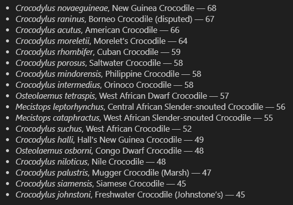
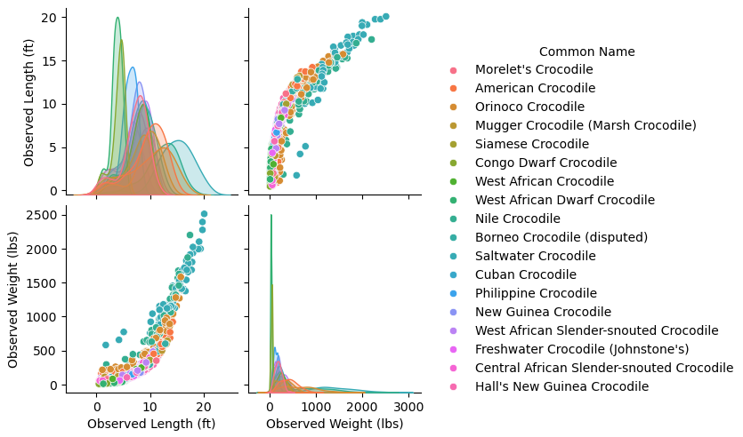
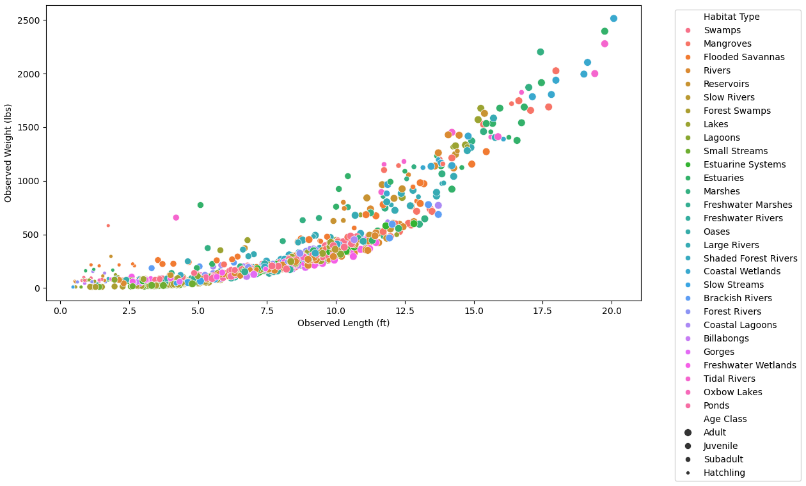
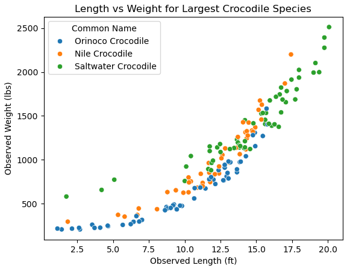
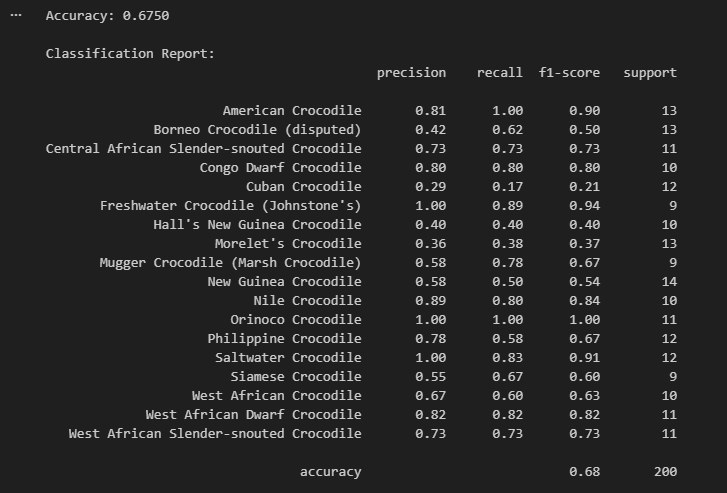
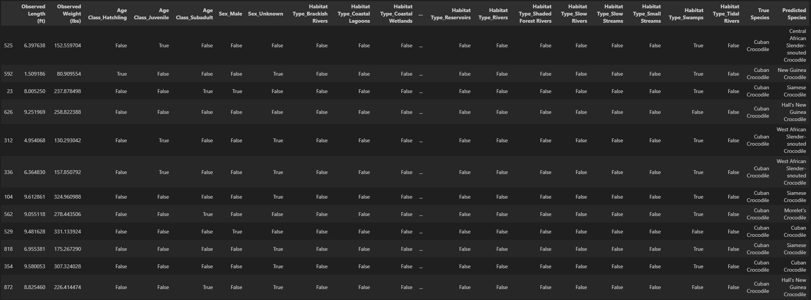
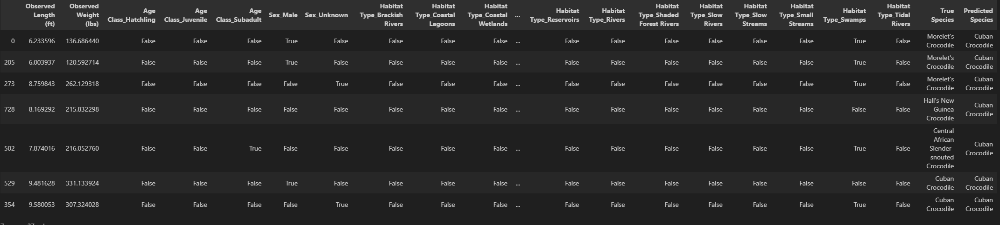
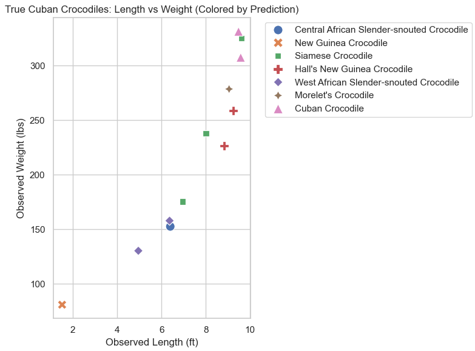

Crocodile Classification using Classification
A project exploring crocodile species classification using data analysis and visualization
Project Journal & Findings
Course: Data Mining · Crocodiles Decision Trees KNN Classification
Introduction & The Data
I am a very big fan of marine biology, dinosaurs and paleontology, and of course, crocodiles. Crocodiles have survived for millions of years, and is one of the most deadly, powerful predators in the world. Now, what if you're in the wild, you see a crocodile, and want to know what kind it is? This project will see if we can take basic data and try to predict crocodile types. The caveat is that I do NOT use location, as that would simply be too easy and I am confident that would work.
The dataset is from the Global Crocodile Species Dataset, by Bhrami Zadafiya, and contains 15 features, such as the Common Name and Scientific name of the crocodile, the family of the species, the genus, the observed weight and length, their age class (juvenile, subadult, adult), sex, country/region, and habitat such as swamps or coastal areas. Remember, crocodiles can survive or roam in saltwater, such as the Saltwater Crocodile, the biggest and most deadly of them all.
Data Pre-processing
Firstly, I changed length and weight from meters and kilograms to feet and lbs for my sake (I apologize for my American brain). Other than that, there were no null values, so my data was good to go.
The features I wanted to look at are: Length, Width, Age Class, Sex, Habitat Type. This is relevant species information, but also doesn't give too much like country. Rather, we will see if habitat is enough for location.
Data Understanding & Visualization
The first thing we can look at is the crocodile names and their counts. I grouped the scientific and common names together, since most of us likely only know the common names. We can see each species has around 40-70 records.
Then I wanted to look at all the weights and lengths of the crocodiles. Here you can see that green and teal are definitely the biggest crocodiles.
Now I want to see them all in one chart. The problem however, is that there are too many samples and too much clutter as you can see below.
Thus, I decided to sort it by the largest species, and then find patterns. Here you can see the three largest crocodiles, which are the Orinoco, the Nile which you may have heard of, and of course, the infamous Saltwater Crocodile. One thing to note is that weight and length both correlate and increase with each other. It can also be seen that Saltwater crocodiles can seem to grow over 20 feet, and the Nile at almost 17. Even the smallest in this section reaches about 15 feet. I really liked this, as there was so much beforehand.
Modeling
For this project, I used Decision Trees to try and predict crocodile types. I actually also played around with KNN, which is K-Nearest Neighbors, and essentially you choose the number of neighbors to look at, and then those data points will result in the assignment of the class (in our case crocodile species). However, I mostly focused on decision trees. Essentially its just a bunch of pathways that come to an output or decision, and different features will split a node or take another path. These kinds of prediction trees are also used in logistic regression. I chose these because I know I have multiple features to look at and I want each to affect each other, and I believe logistic regression doesn't do a great job of that.
Evaluation
So from our model, we can see that the model is 68% accurate, which is not the worst. However if you look closely, there are a few specific crocodiles in which the model performs terrible on. Looks like the Cuban Croc, Borneo Croc, New Guinea Croc, and the Hall's New Guinea Croc have pretty bad F1-scores. This could be because of very similar features like size and habitats, or not enough training data/samples. Running this with Country/Region shows very high scores, which was expected.
I was trying to see why the Cuban Croc has such a terrible score. It shares a very similar mean average length as the West African Crocodile by .06, and there are many crocodiles in the 7 foot average range. It also shares similar mean weights with many crocs, noticeably Hall's New Guinea by 7 lbs, and again the West African Crocodile by almost 30 and the Siamese by 10. Now we can see what our model predicts but what the true value is (far right).
 We can see that the model predicts Cuban Crocodile twice when it was Hall's New Guinea, New Guinea Once, Morelet's and Central African Slender-Snouted and Siamese once, and only once was it right where it was Cuban. We also see that when it was truly a Cuban Crocodile, the model guessed it was Hall's New Guinea three times, and New Guinea and West African Slender-snouted Crocodile and Siamese twice, all which had similar means for length and weight. We also see that the Habitat is usually the swamp for most of these. Here is a visualization in a chart. Sorry, I did not make the best chart for it, so it may be a little confusing.
Storytelling
Thoughout this, I learned a lot about feature selection, but especially linear separation. Perhaps it does not pertain to Decision Trees one to one, but the essense is that you have to be able to isolate features and values to group a target class. We had overlapping features/values sometimes, and no extra feature to separate the difference between those species, resulting in some failed predictions. However, for not using country, I believe this is actually really good. Imagine, for funs sake, you did not know what country you were in, but you know a lot about crocodiles. Boom, this model can give data to help you come up with educated guesses.
Impact & Conclusion
So we know that when the species was actually a Cuban Crocodile, our model does terribly. This means the Cuban Crocodile is not a clearly separated cluster. There is no real separation from this Crocodile from a few others because the traits overlap and blend too much. This results in false positives, or terrible precision. Essentially, there is not a good enough contrasting features to separate or create like a decision boundary. This can be controlled with feature selection and grouping, perhaps standardizing, and of course, leaving in the country.
Access
Click here to view this project on GitHub (the HTML): GitHub Repository
Click here to view the dataset on Kaggle: Kaggle Dataset Link